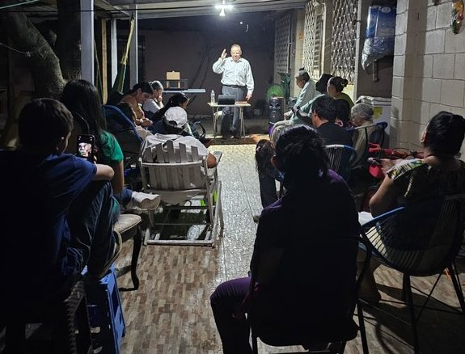

🙏 Donar a la misión
Su apoyo hace posible la obra en Honduras
📍 Información
San Pedro Sula, Honduras
📧 broblanchard@sanpedroapostolic.org
📱 +504 9384-1478 (WhatsApp)
💸 Zelle / Venmo
Enviar a:
+1 (225) 279-0172
Missionary David Blanchard
Rápido y sin comisiones en EE.UU.
🌐 Donación en línea
Puede donar fácilmente con tarjeta o transferencia
Donar en líneaSeleccione: Honduras - Rev. David Blanchard
📬 Donar por correo
Misiones Apostólicas De Honduras
302 Town Center Parkway
Lafayette, LA 70506
Memo: Blanchard Honduras Missions
